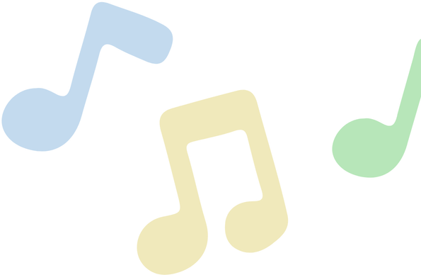
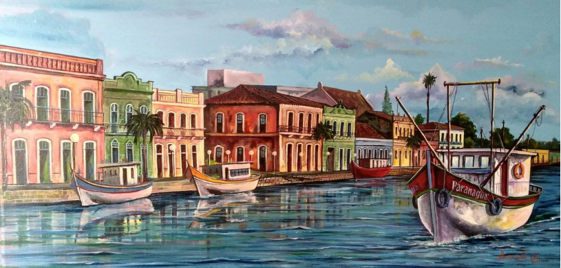
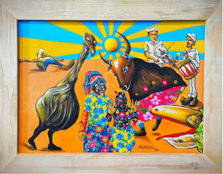
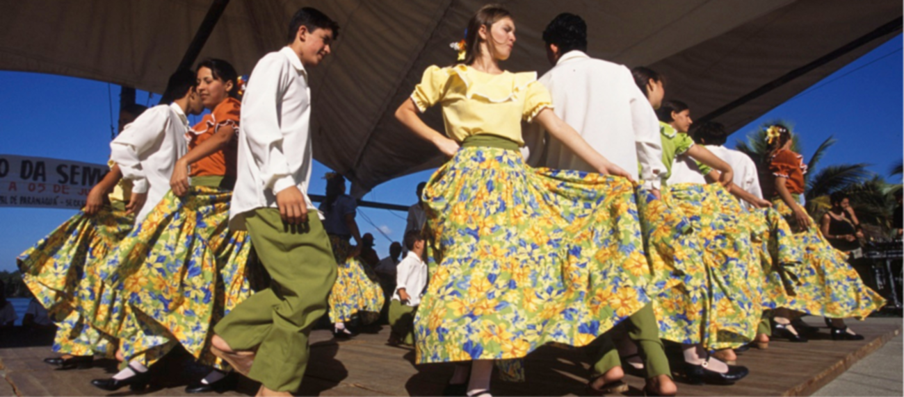

Entre pinturas urbanas, artesanato, fandango e até baião, a arte de Paranaguá tem suas raízes na cultura caiçara, onde seus saberes tradicionais refletem a vida junto ao mar e a Mata Atlântica. Além dessas artes que habitualmente vemos pelas praças, o município também sedia festivais artísticos de prestígio focados especificamente em artes cênicas, cinema, literatura e música contemporânea.
A história das artes plásticas em Paranaguá é rica e profundamente ligada ao cenário marítimo, à arquitetura colonial e ao cotidiano caiçara. O município foi o berço de figuras históricas fundamentais para a arte paranaense, como Iria Corrêa, Alfredo Andersen e Miguel Bakun, porém, um dos nomes mais ativos e destacados na nova geração das artes visuais é o de Rafael Palotino: o artista parnanguara ganhou grande destaque internacional ao expor suas telas no prestigiado Museu do Louvre, em Paris. Suas obras usam cores vibrantes e traços modernos para retratar a cultura popular local, com forte foco no Fandango Caiçara e no Choro Brasileiro.

Historia Historia Historia Historia Historia Historia

“Fandango de Paranaguá”, uma das obras de Rafael Palotino exposta no Museu do Louvre, em outubro de 2024.
Para além das pinturas em quadros, a cidade também é marcada pelos projetos de
artes que foram produzidos nos últimos anos. Desde a sua criação em 2019, o projeto
Paranaguá Mais Cores (idealizado pelo artista Gio Negromonte) contabiliza cerca de 50
intervenções artísticas realizadas. Esse número abrange uma série de ações integradas
na cidade, como painéis urbanos e mutirões, contribuindo para dezenas de pinturas
espalhadas pelo município e que se expandiram para outras cidades.

A Casa Monsenhor Celso (também conhecida como Casa da Cultura Monsenhor Celso) é um dos marcos históricos e culturais mais importantes de Paranaguá, Paraná. Localizado no coração do Centro Histórico, o casarão colonial do século XVIII funciona hoje como um dinâmico centro cultural que recebe exposições artísticas, oficinas e eventos regionais.
FANDANGO CAIÇARA

Foto referencial de um evento de Fandango Caiçara encontrada na internet. O Fandango Caiçara é uma expressão cultural que une música, dança, poesia e artesanato no litoral paranaense, tendo a Ilha dos Valadares, em Paranaguá, como seu principal polo. Reconhecido pelo IPHAN como Patrimônio Imaterial do Brasil, ele nasceu como uma celebração comunitária ao final dos mutirões de trabalho na pesca e na roça.
A música é conduzida pela rabeca, pela viola caiçara e pelo adufe (pandeiro tradicional), todos confeccionados artesanalmente por mestres locais. Sua dança divide-se em duas modalidades principais: o batido, em que os dançarinos usam tamancos de madeira para marcar a percussão no assoalho, e o valsado, com passos mais leves e deslizados. Sua tradição segue viva com a transmissão oral de versos e ritmos entre gerações.